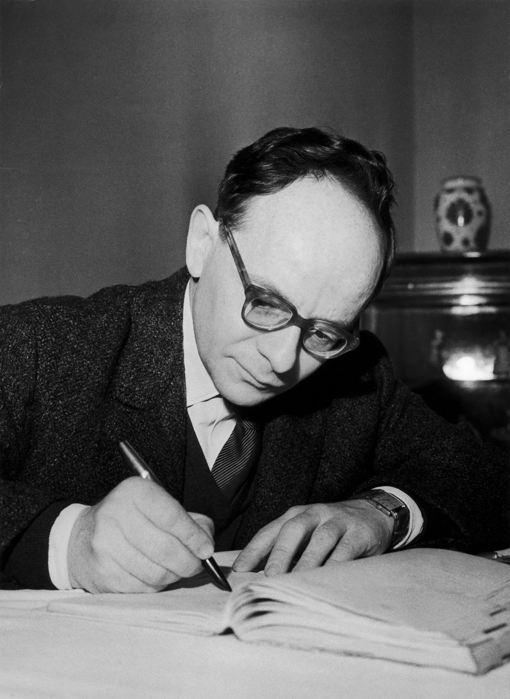
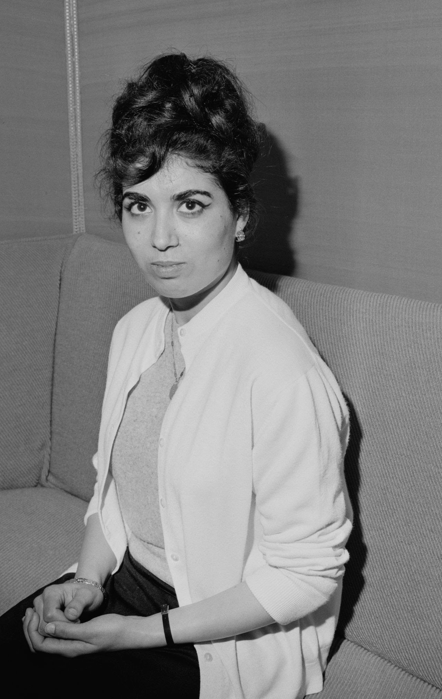
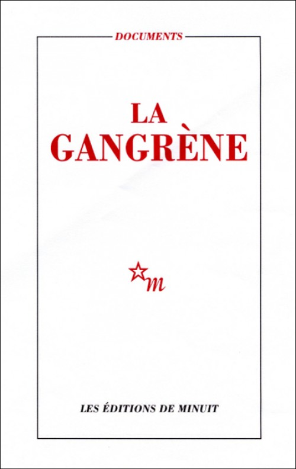
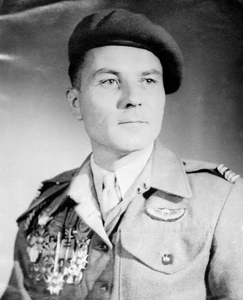

La torture comme système :instruire la preuve d’un système d’État.
Pas des bavures : une organisation ouverte par la loi, exécutée par une chaîne, couverte jusqu’au sommet.
1956 — 1962
14 / 15
S02 · Le concept-clé
نظام
niẓām · le système, l’ordre institué
Système
la conclusion du module, posée d’entrée
Une organisation ouverte par la loi, exécutée par une chaîne, et couverte jusqu’au sommet.
S03 · La distinction qui commande tout
Deux mots que tout oppose
Reprocher une bavure, c’est accuser un homme. Établir un système, c’est mettre en cause une politique.
L’un
La bavure
L’écart d’un individu qui déborde le cadre. Le cadre reste sain : on sanctionne l’homme, l’ordre est rétabli.
L’autre
Le système
Le cadre lui-même produit l’acte, l’organise et le protège. Ce n’est plus un homme qui déborde : c’est un appareil qui fonctionne.
Le nombre des victimes prouve l’ampleur, pas la nature. Ce qui prouve la nature : les textes qui autorisent, la chaîne qui exécute, la hiérarchie qui couvre, le temps qu’il aura fallu pour l’avouer.
S04 · Le point de départ
القانون
al-qānūn · la loi
Tout commence par une loi
12 mars 1956
l’Assemblée vote les pouvoirs spéciaux
Loi nº 56-258 · 455 voix pour, 76 contre · dont les 146 députés communistes
L’hypothèse du module
La torture devient possible par la loi, pas malgré elle. Le texte transfère à l’armée les pouvoirs de police administrative et judiciaire : l’arrestation, la détention, l’interrogatoire passent de la police aux parachutistes. Ce que l’on instruit ici, c’est un système.
S05 · L’ancrage · le cadre se met en place
Alger · 1956–1957 · la police devient militaire
La règle change de mains, et le droit se retire.
7 janvier 1957
Alger · la 10ᵉ division parachutiste
Massu reçoit la police
Le préfet délègue les pouvoirs de police au général Massu. La même institution arrête, détient, interroge et juge : les contre-pouvoirs qui séparent ces fonctions sont supprimés d’un coup.
L’exception
Ce que les juristes nomment l’état d’exception
La loi se suspend elle-même
Le pouvoir suspend légalement la loi, et cette suspension, censée être brève, devient la règle. La torture opère dans un espace que la loi a délibérément vidé de tout droit.
S06 · Deuxième pièce · l’échelle
Un chiffre, et un homme pour le porter
Trois mille disparus ne sortent pas de bavures individuelles.
1956
Préfecture d’Alger · chargé de la police
Paul Teitgen
Nommé secrétaire général de la préfecture d’Alger, chargé de la police. Il voit passer les registres, les assignations, les transferts.
Dachau
Résistant déporté · Gestapo de Nancy
Il sait de l’intérieur
Torturé quatorze ans plus tôt dans les caves de la Gestapo, il est maintenant haut fonctionnaire d’un appareil qui recommence.
3 024
Sur quelque 24 000 assignés à résidence
Des disparus
Le chiffre qu’il avance lui-même, pour les sept premiers mois de 1957. Un ordre de grandeur, prudent : le total réel reste inconnu. Même prudent, il dit un traitement de masse.
S07 · La pièce · le regard de l’appareil sur lui-même
24 mars 1957 · lettre à Robert Lacoste
Teitgen fournit mieux qu’un chiffre : le regard de l’appareil sur lui-même. Il demande à être relevé de ses fonctions.
Extrait de la lettre
« Au cours de visites récentes effectuées aux centres d’hébergement de Paul-Cazelles et de Beni-Messous, j’avais reconnu sur certains assignés les traces profondes des sévices ou des tortures qu’il y a quatorze ans je subissais personnellement dans les caves de la Gestapo de Nancy. »
"
1957
Nous sommes engagés non pas dans l’illégalité, mais dans l’anonymat et l’irresponsabilité qui ne peuvent conduire qu’aux crimes de guerre.
Paul Teitgensecrétaire général de la préfecture d’Alger · demande à être relevé de ses fonctions
Le tortionnaire exécute, le chef ignore, le ministre ne sait pas : cette déresponsabilisation organisée est la définition même du système, vue de l’intérieur.
S07 · Troisième pièce · l’organe
1957 · les dispositifs opérationnels de protection
On ne bricole pas une bavure dans un coin de caserne : on fonde un organe.
D.O.P.
1957 · dispositifs opérationnels de protection
Un sigle, donc un service
Des équipes spécialisées dans le renseignement obtenu par interrogatoire, rattachées au commandement. Un sigle, une place dans l’organigramme, une mission.
Branche
L’historienne Raphaëlle Branche
L’architecture reconstituée
Elle en a reconstitué le fonctionnement pièce par pièce : les circuits, la hiérarchie, la place de chaque équipe dans l’organigramme.
Circulaire
Après la bataille d’Alger
« Fait ses preuves »
Des directives recommandent d’étendre au territoire entier les procédés qui ont, selon la formule administrative, « fait leurs preuves » dans la capitale. Une pratique généralisée par circulaire appartient à l’institution qui l’ordonne.
S08 · L’ancrage · l’homme qui écrit

Henri Alleg · portrait d’archive
Quatrième pièce · le livre saisi
Henri Alleg
Une victime écrit, depuis sa cellule, ce qu’on lui fait. L’État l’interdit.
Fonction
Directeur d’Alger Républicain
Arrestation
Par les parachutistes · torturé un mois durant à El-Biar
Le livre
La Question · Éditions de Minuit · février 1958 · préface de Jean-Paul Sartre
Saisie
27 mars 1958 · motif : « participation à une entreprise de démoralisation de l’armée »
Plus de 160 000 exemplaires circulent quand même. La saisie n’a pas empêché le livre : elle l’a désigné.
S10 · Citation · la continuité doctrinale
Les méthodes viennent d’une autre guerre
"
1957
Tu vas parler ! Tout le monde doit parler ici ! On a fait la guerre en Indochine, ça nous a servi pour vous connaître.
Un tortionnaire, à El-Biarrapporté par Henri Alleg · La Question · 1958
S11 · La censure comme aveu
Henri Alleg · La Question · Éditions de Minuit · 1958
Saisir le livre, c’est avouer le système.
Ouvrage interdit · 1958pièce versée au dossier
En interdisantLa Questiond’Henri Alleg, l’État reconnaît qu’il y a quelque chose à cacher. Le livre interdit devient une pièce publique.
Ce qui reste lisible après la censure est précisément ce qu’elle voulait taire.
1958
La Question · saisie
1959
La Gangrène · saisie
2018
reconnaissance
S12 · Le dossier s’élargit
Audin · Boupacha · La Gangrène · Bollardière
Quatre pièces de plus, et le système ne tient plus dans le secret.
Un cas isolé s’explique. Quatre traces qui convergent, non.
Maurice Audin1932 – 1957

Djamila Boupachanée en 1938

La GangrèneMinuit · 1959

de Bollardière1907 – 1986
Pièce I · 11 juin 1957
Maurice Audin
Mathématicien de vingt-cinq ans, militant du Parti communiste algérien, arrêté à son domicile. L’armée annonce une évasion ; il ne reparaîtra jamais. Son corps n’a pas été retrouvé.
Pièce II · février 1960
Djamila Boupacha
Jeune militante du Front de libération nationale, torturée et violée par des soldats français. Gisèle Halimi porte l’affaire, Simone de Beauvoir l’ouvre dans Le Monde. Le corps des femmes traité comme un terrain d’interrogatoire.
Pièce III · 1959
La Gangrène
Recueil de témoignages d’Algériens torturés à Paris même. Saisi à son tour. Ce qu’on croyait resté outre-Méditerranée remonte jusqu’au cœur de l’État.
Pièce IV · avril 1957
Général de Bollardière
Compagnon de la Libération, il refuse ces méthodes et le dit. Sanction : soixante jours d’arrêt de forteresse. Protester avait un prix ; pratiquer n’en avait pas.
La méthode de l’historien
Contre le récit officiel de l’évasion, Pierre Vidal-Naquet applique dans L’Affaire Audin la réfutation d’une source falsifiée : l’évasion est matériellement impossible. Même un État libéral, mis au défi par une dissidence qu’il ne maîtrise pas, peut recourir à la torture.
Au-delà d’un seul livre.
Un livre saisi prouve un cas. Plusieurs livres saisis, et un disparu, prouvent ce que l’État savait.
المخفيّون
al-makhfiyyūn · ceux qu’on a fait disparaître
S14 · Le verdict · et son retard
2014 → 2018 · ce que l’État accepte de dire
En deux mille quatorze, un fait. En deux mille dix-huit, une politique.
2014 · François Hollande
Un fait
Maurice Audin n’a pas pu s’évader : il est mort en détention. L’État corrige un mensonge, et s’arrête là.
13 septembre 2018 · Emmanuel Macron
Un système
Audin « a été torturé puis exécuté ou torturé à mort par des militaires qui l’avaient arrêté à son domicile ». Et l’État nomme le dispositif : « le système appelé arrestation-détention », rendu possible par les pouvoirs spéciaux de 1956.
C’est l’État lui-même qui prononce le mot système, remonte la chaîne arrestation-détention-interrogatoire et la relie à la loi. Il lui aura fallu soixante et un ans : le reconnaître, c’est s’accuser soi-même.
S15 · À retenir
La torture, le bilan situé
Une loi ouvre la porte ; un livre le prouve ; l’État finit par le nommer.
1956
Pouvoirs spéciaux : l’armée reçoit la police. Le cadre légal rend la torture possible.
1958
Alleg, La Question : la victime documente. Le livre saisi devient preuve.
2018
Reconnaissance d’État : un système « institué par la France ».
Ce qu’on emporteLa chaîne remontait jusqu’à la loi. C’est ce que l’État a fini par dire, et c’est ce qui sépare un système d’un accident.